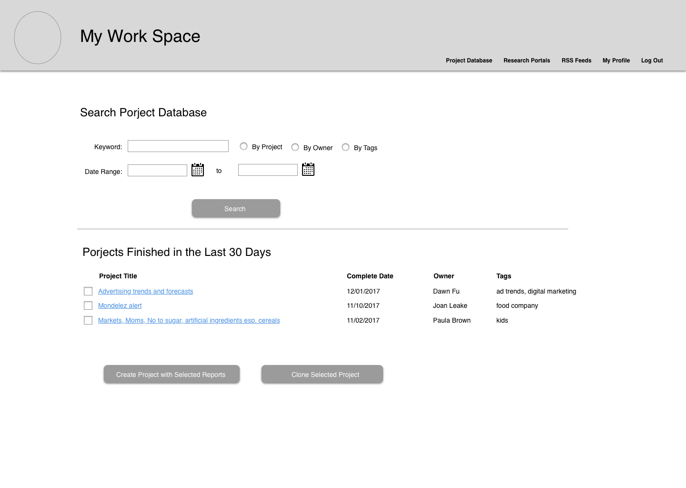

My Work Space
 Duration: 4 Weeks
Duration: 4 Weeks
 Tools: Word Document, Balsamiq, Sketch
Tools: Word Document, Balsamiq, Sketch
 My Roles: User Research, Information Architecture, Prototyping
My Roles: User Research, Information Architecture, Prototyping
I work with a group of marketing research analysts. They get research requests from users on a daily basis and they each have their own specialty in categories. Based on the category of the research topic, a research project is assigned to an analyst and s/he needs to compile the information s/he finds and sends it to the user. I sometimes heard them complaining that it's hard to find a file that somebody else saved on the shared network. I decided to take the situation in my hands and design something to help with their productivity. I sent out requests to several analysts and asked to observe them working on the research project. The goal is to:
- Figure out what kind of frustration they encounter when they handle a research project and how I can use technology to help them to change the situation.
- What do they do to handle a project that they think wasting a lot of time and need to be improved.
- If there is a web application that stores all the information they need to access, will it help them to improve the efficiency at work.
After observing 5 analysts working on the research project, I found that their working process is very similar. Also, they had the same pain point when it comes to searching files on the shared network. The reason is that the shared network doesn't provide very strong search capability. Eighty percent of the time, the analyst has to replay on the name convention whoever saved the report to the network.
Since I have an idea where the pain point is and what causes this problem, I set up a check list for the basic features of this application.
- This application should have the capability for the analyst to create a project. They should be able to add other team members to the project so that all team members can collaborate at the same time.
- This application should have the capability to plug in all the research resources that the analyst uses on a daily basis. If the resource is subscription based, the system should store the user ID and password and log them in automatically so that they don’t need to login each time.
- This application should have the capability for them to store files and they should be able to search these files based on the tags/keywords they attach to the project.
- This application should have the capability for them to use to send emails to the client.
- Depending on the type of the project, the analysts should be able to use the email template stored in the system to send emails.
Next, I sketched the design for the system. Some sample pages below.
